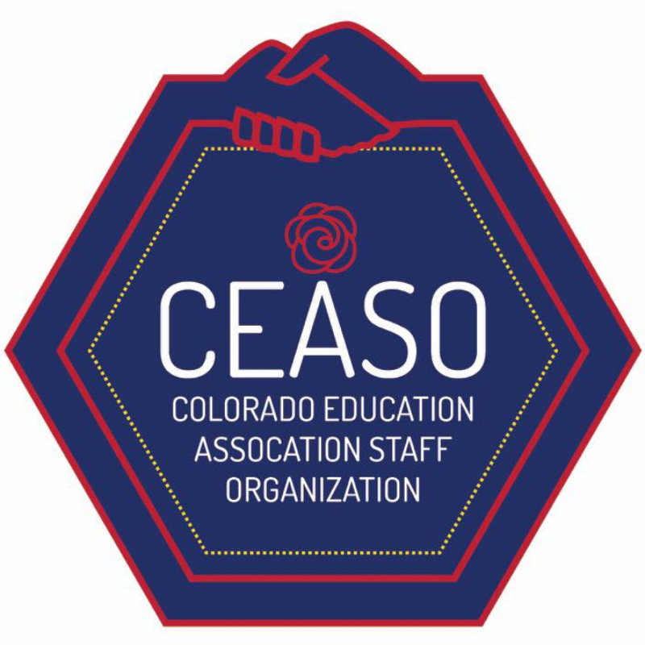

Colorado Education Association Staff Organization
[ Logo ]
A union of educators who work collectively to promote quality public education and advocate for the professional interests of public education employees.
[ Option 1 ]

[ Option 2 (chosen as the official logo) ]

[ Objectives ]
• Create a visual board of ideas and icons with the union.
• Narrow down message and color choices.
• Develop rough drafts with the president of the union.
• Finalize logo with a vote by union members.